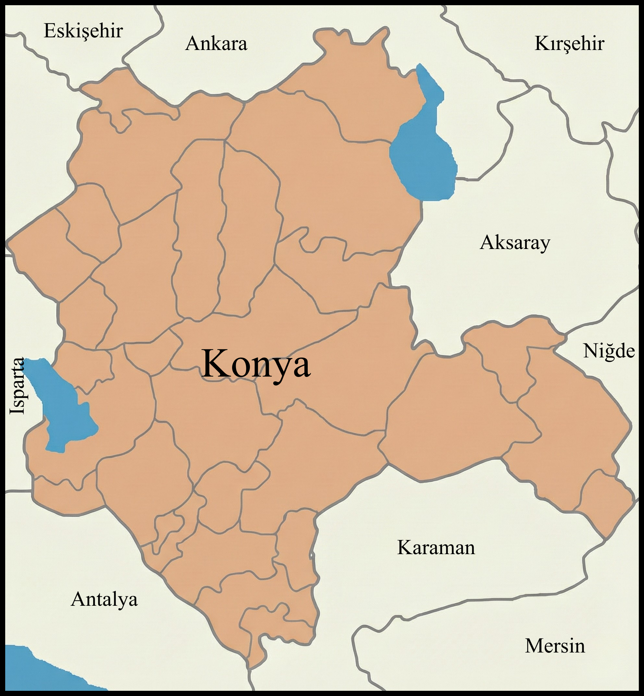
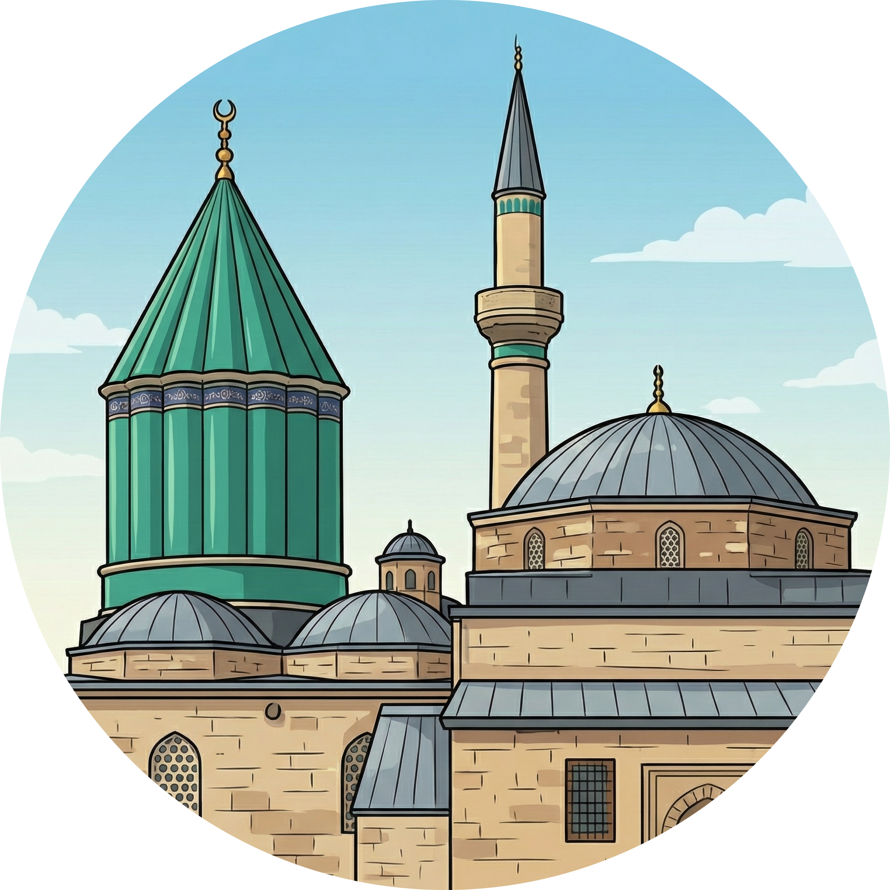
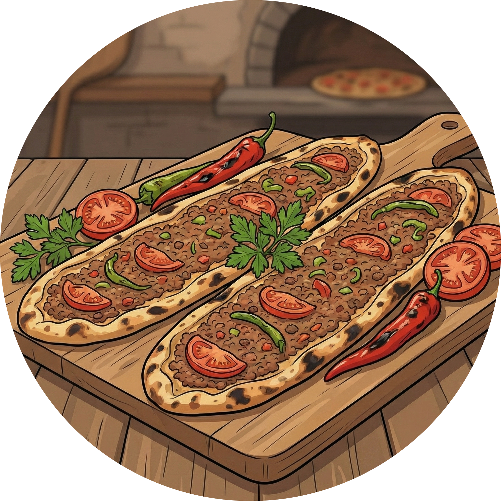
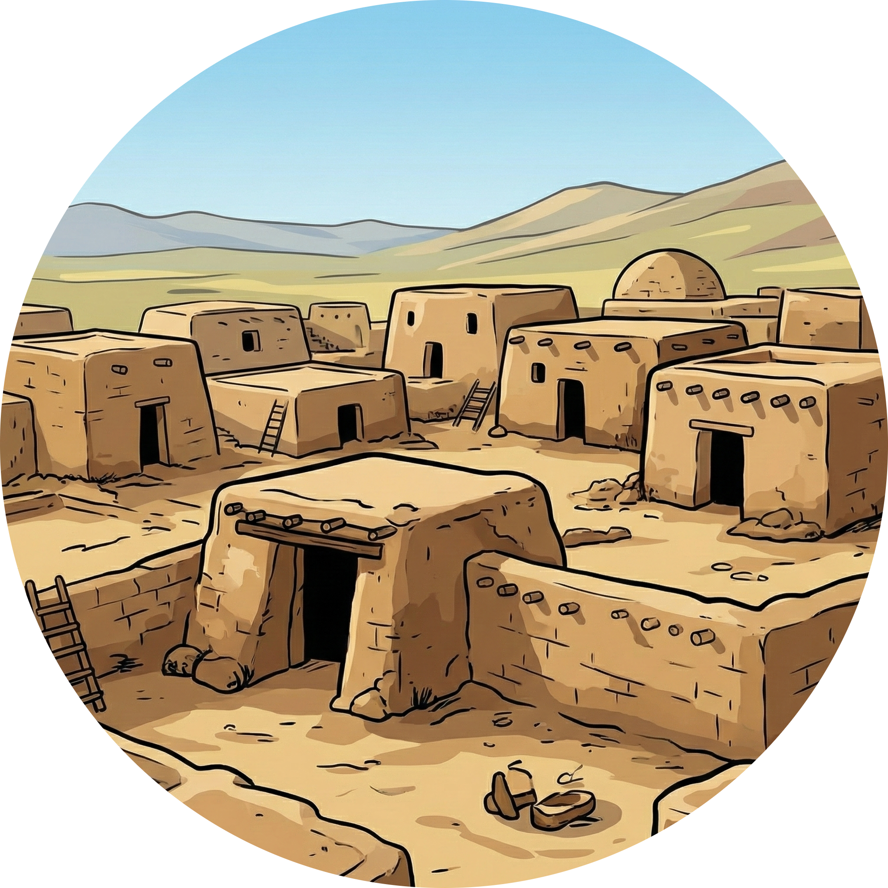
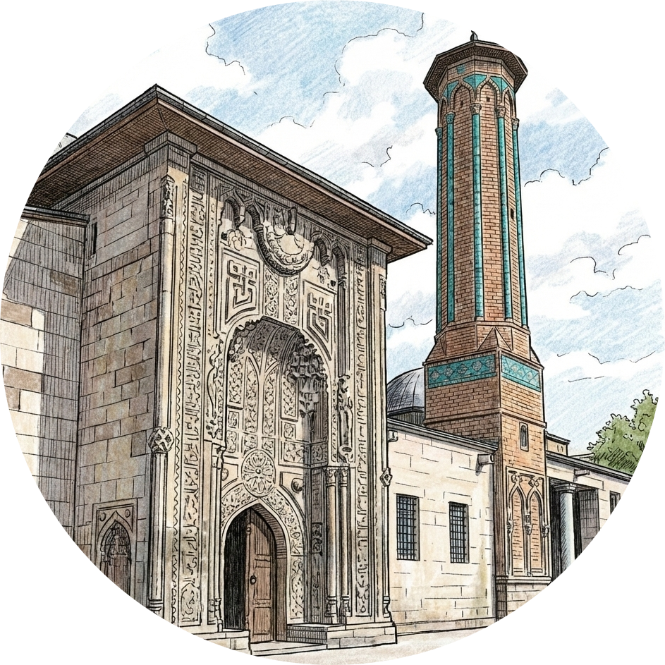
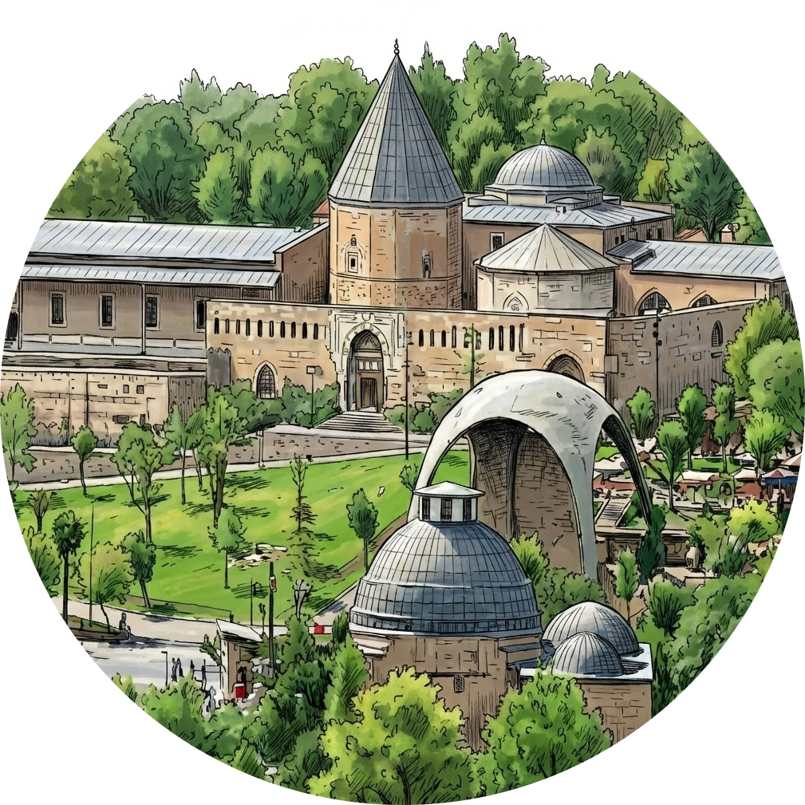
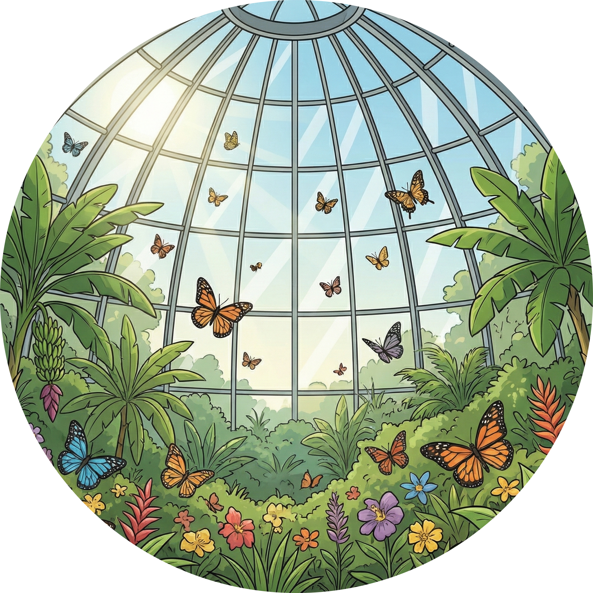

Konya'nın Kültürel Zenginlikleri
Ana Sayfa
Haritadaki ikonlara tıklayarak Konya'nın kültürel zenginlikleri hakkında bilgi alabilirsiniz.

Mevlana Müzesi

Etli Ekmek

Çatalhöyük

İnce Minareli Medrese

Alaaddin Tepesi

Tropikal Kelebek Bahçesi

Etkinliği Aç
Geri